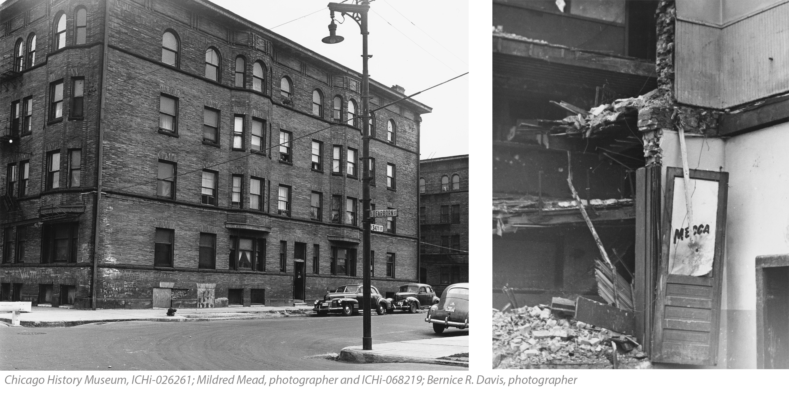

A Material Collapse That is Construction is a 30-minute audio experience situated around Crown Hall at IIT in Bronzeville, Chicago. The project strives to explore the complicated and layered history of the site through the building that preceded the campus—The Mecca Apartments. Affectionately known as “The Mecca Flats” or simply “The Mecca,” the building was a hub of black culture and life in Bronzeville for nearly half a century. When the Mecca was demolished in 1951 to clear the way for IIT’s campus expansion, it signaled the loss of a historic community. Through poetry, soundscapes, music, and critical analysis, A Material Collapse That is Construction proposes deeper reflection on the legacy of this site, and its implications for socio-spatial politics in the city.
Participants can either visit Crown Hall and move through the experience using their location data, or click through the map from home. Soon, participants will also have the opportunity to submit their own audio reflections on what they learned during the half-hour. Responses will be pinned to the final marker for new participants to listen and respond to.
A Material Collapse That is Construction was created for a class taught by Dr. Aymar Jean Christian and Dr. Rebecca Zorach at Northwestern University in 2020 for the Black Arts Consortium's Mellon-Sawyer Seminar entitled “The Black Arts Archive: The Challenge of Translation.”